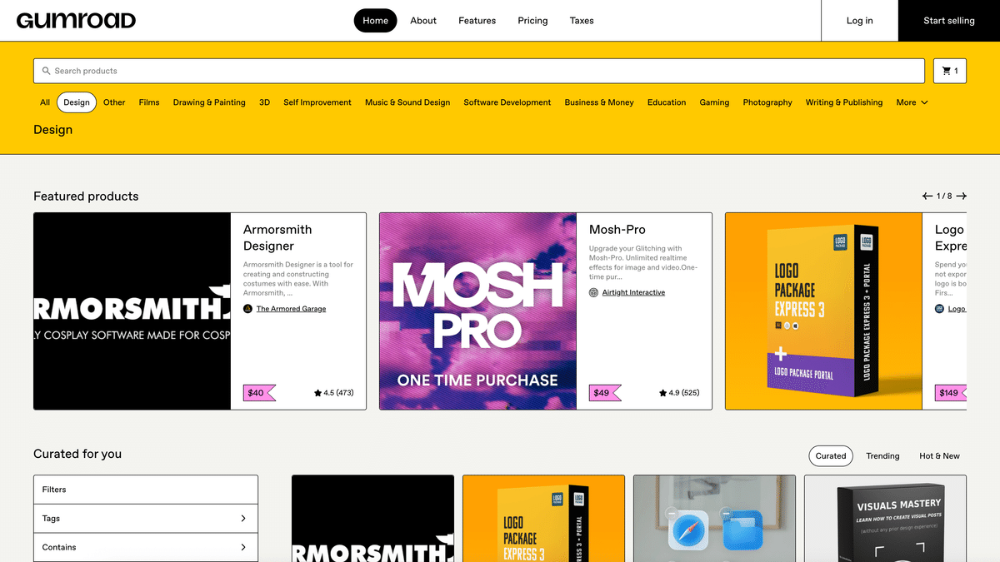
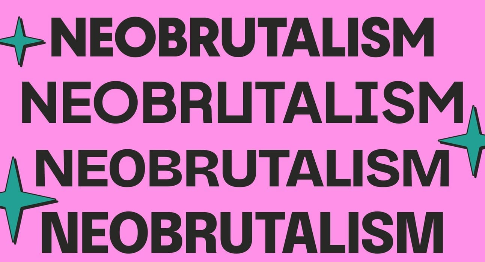
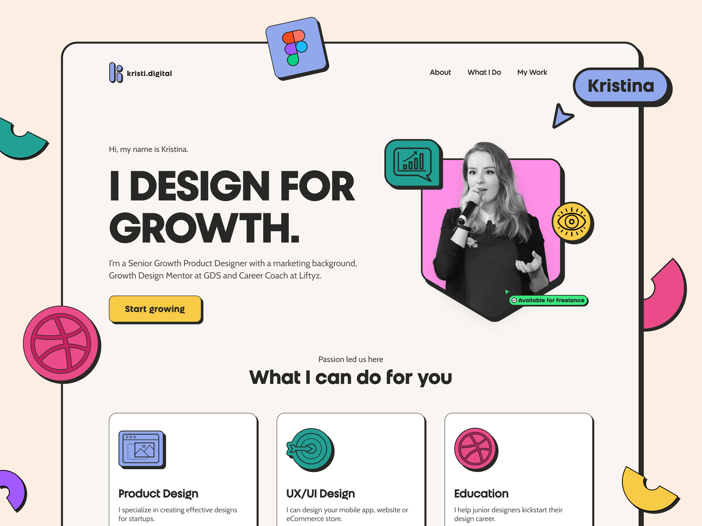
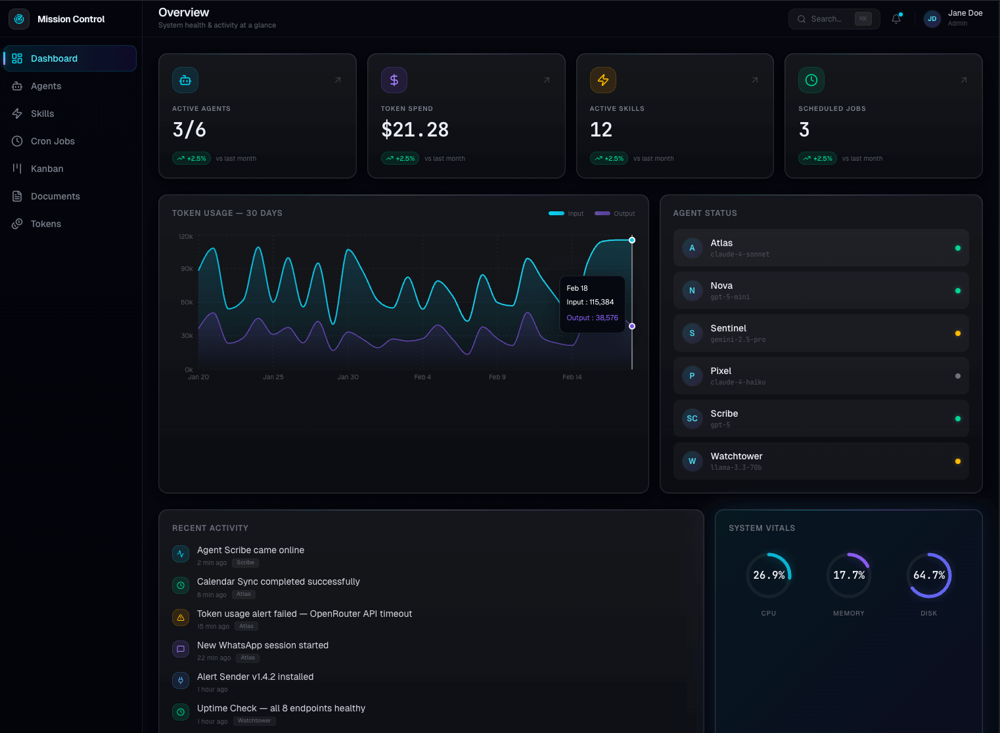
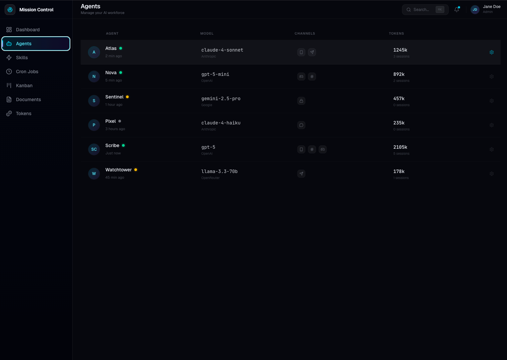
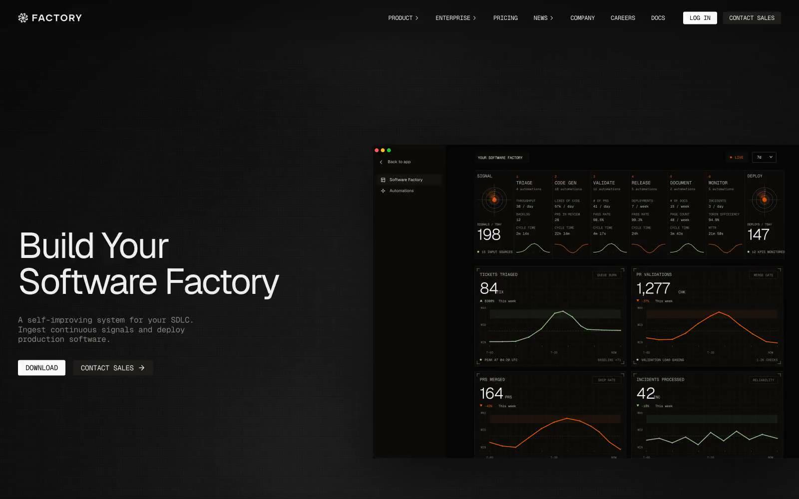
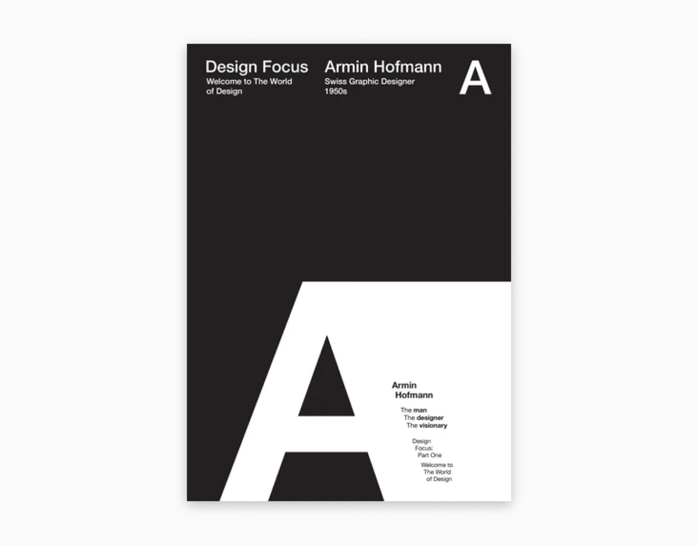
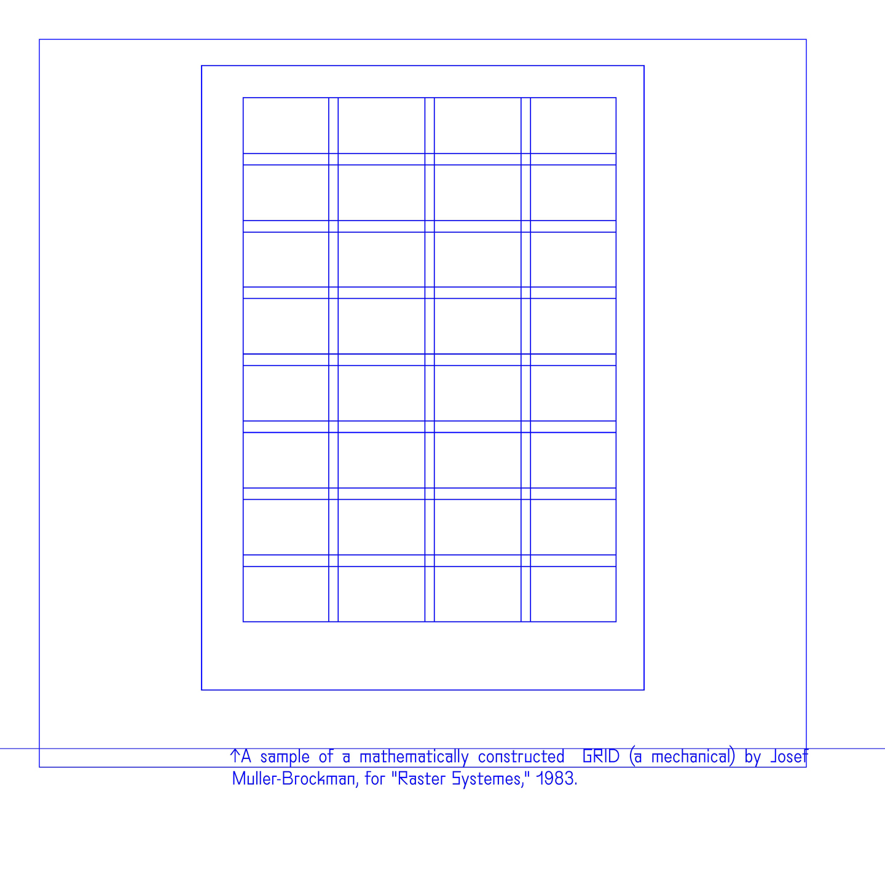
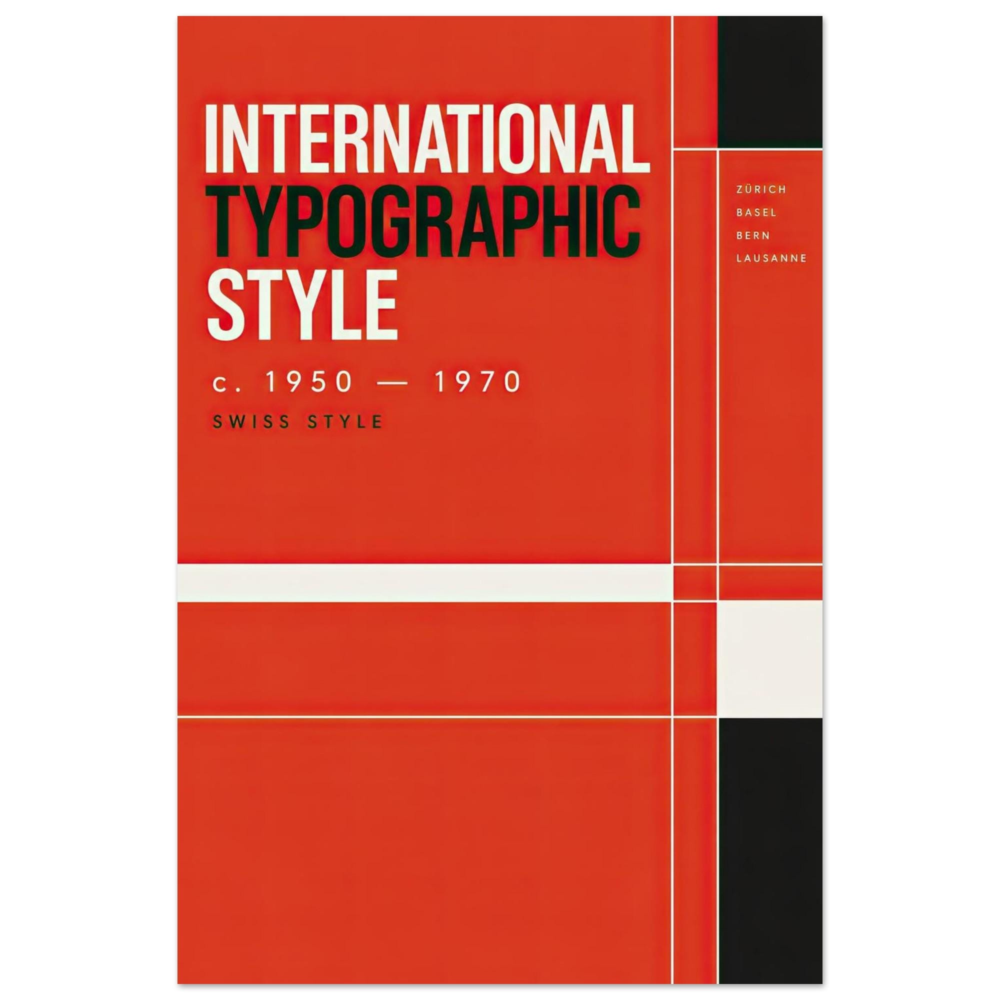

Agent Desk · Design Research · 2026-11-17
Design
Inspirations
Five researched directions for the Agent Desk surface, judged against the warm-paper system in DESIGN.md.
Researched from Dribbble, Pinterest, Mobbin, Muzli, SaaSUI, SaaSFrame, Refero Styles and live products.
Anchor: warm-ledger paper #F6F4EF · ink #1F2A27 · bottle green #14594E · instrument-grade numerals.
01Calm Operator ConsoleThe dashboard as a well-set financial statement: quiet chrome, one hero number, color only where it means something.
02Bento Grid with IntentTiles of deliberate, asymmetric size: the layout itself tells you where to look first.
03Neo-Brutalism, DisciplinedThick borders, hard shadows, flat color. Loud on marketing, calm in the app.
04Dark Mission ControlConsole discipline: monospace data, one chromatic voice, motion reserved for signals.
05Swiss EditorialThe grid as the brand: oversized grotesque type, flush-left, one structural accent.
01
Light · warm · editorial · daily-use dashboard
Calm Operator Console
The dashboard as a well-set financial statement: quiet chrome, one hero number, color only where it means something.
Signature moves
- Single-metric focus. The whole layout defers to one north-star number (Baremetrics builds around MRR, Vercel Analytics around uptime). Everything else is subordinate context.
- Progressive disclosure. Show the minimum needed for the next decision, reveal on demand. Linear, Notion and Intercom treat this as product philosophy.
- Color communicates status, not decoration. Red means broken, not "look here". Vercel runs nearly monochrome so status colors carry all the semantic weight.
- Tables as a first-class interface (Stripe) and editorial typography on financial data (Mercury).
- Comparison context by default. Every number carries period-over-period framing so users never ask "is this good?".
Palette seeds
Type seeds
One humanist sans for everything (Plus Jakarta Sans fits), tabular numerals for data, display sizes capped at 28–32px.
Hierarchy from weight and space, not size jumps. Hairlines instead of shadows.
Moodboard
Payrix finance dashboard: one account-value hero, quiet supporting cards. Reference for study, not for copying.
Study: Linear (quiet chrome) · Mercury (editorial fintech) · Stripe (tables) · Vercel (status-only color) · Plausible (one-page simplicity). Roundups: SaaSUI 422 real screens, Muzli 50 dashboards 2026, Dribbble tags minimal-dashboard and calm-dashboard.
Agent Desk fit
Incumbent DESIGN.md direction: refine, do not replace. Push single-metric focus harder, keep color for status only, steal Mercury's editorial table typography.
How it turns into slop
Uniform equal-sized cards, purple-default accents, gradient buttons on a light theme, or six competing "hero" KPIs. The discipline is subtraction.
02
Dashboard overviews · marketplaces · feature sections
Bento Grid with Intent
Rectangular tiles of deliberate, asymmetric size: the layout itself tells you where to look first.
Signature moves
- Strict CSS Grid, not masonry. Tiles span defined columns and rows; a hero KPI tile might span 6 columns while four status tiles sit beside it in a 2x2 cluster.
- Bigger tile equals more important data. Spatial weight does the talking before any label is read.
- One job per tile: a KPI, a chart, a status or an action. Never two jobs.
- Defined collapse rules. 4–6 column tiles drop to full width on mobile; guard against truncation at narrow viewports.
- The story test. Decide what story the grid tells first; if the only idea is that cards fit neatly, it looks polished while saying nothing.
Palette seeds
Type seeds
Flat tiles on paper or dark ground, depth from hairlines, not shadow stacks.
Small-caps tile labels, one accent per tile maximum, values in tabular numerals.
Moodboard
Unkey: bento tiles each demonstrating one product behaviour. SaaSFrame library holds 52 more examples (Nov 2026).
Study: Orbix bento grid guide (anatomy, collapse rules) · SaaSFrame pattern library · Dribbble bento-grids tag (Elina Sabitova Graph Dashboard light/dark, Hitesh Tapaniya productivity bento, CyberPulse) · Pinterest bento grid dashboard boards.
Agent Desk fit
Strong for the overview and plugin marketplace grid: a wide hero tile (one agent status number), a 2x2 status cluster, a wide activity-feed tile, all on warm paper.
How it turns into slop
Cards inside cards inside cards, identical tiles pretending to be bento, decorative illustration tiles carrying no data, a hierarchy that flattens under tile count.
03
Marketing · storefronts · brand moments (not the daily dashboard)
Neo-Brutalism, Disciplined
Thick ink borders, hard zero-blur offset shadows, flat saturated color. The 2026 rule: loud on marketing, calm in the app.
Signature moves
- The grammar: 2–4px solid ink borders, box-shadow 5px 5px 0 0 (zero blur), border-radius 0, flat fills, no gradients.
- Hierarchy through the style itself. Gumroad's primary button carries the thickest border and the only hard shadow in the hero: importance is encoded, not announced.
- Expression versus interaction. Brutalism aggressively on heroes and marketing blocks; dialed down inside dashboards, forms and transactional flows.
- Tokenize the aesthetic. Stroke width, shadow offset and accent color as explicit tokens so intensity is a variable, not a rewrite.
- Body text stays boring on purpose. A 2026 usability study: disciplined brutalist layouts score reasonably, chaotic ones collapse to 8–10% task success on dense pages.
Palette seeds
Type seeds
Headings: Space Grotesk 700, Archivo Black or Lexend Mega.
Body: Inter 400, predictable spacing. Mono accents: Space Mono.
Warm-paper variant: manila and terracotta fills with the same ink grammar.
Moodboard



Gumroad (the benchmark) · neobrutalism poster · a disciplined portfolio page: bold headline, calm body.
Study: neubrutalism.com definitive guide · neubrutalism.dev (64 React + Tailwind v4 components) · NN/g best practices · Mobbin neo-brutalism gallery · benchmarks Gumroad, Dodonut, Tony's Chocolonely, MOUTHWASH Studio, UGLYCASH.
Agent Desk fit
Marketing page or marketplace storefront only. Inside the dashboard, at most the ink-outline grammar on the single primary action: 2px border, offset shadow, small radius.
How it turns into slop
Everything loud at once, decoration the style does not need, hard shadows stacked on rounded glass, WCAG contrast failures hidden inside playful palettes.
04
Night theme · live tails · observability · agent runs
Dark Mission Control
NASA-console information design: near-black ground, panel grid, monospace data, one chromatic voice, motion reserved for signals.
Signature moves
- Data in monospace, exclusively. Labels can be sans; telemetry values never. No proportional fonts for numbers.
- Radius ceiling 4px, flat panels a step lighter than ground, hairline borders at 10–25% alpha. Depth from layering, never glow.
- Every hue conveys operational meaning. Decorative color in a data display is an anti-pattern.
- Motion is an alert channel: if it moves, it means something. Nothing else animates.
- Dark contrast craft: never pure black grounds (dark navy instead), never pure white text, charts mostly gray with one or two strongly colored series.
Palette seeds
Type seeds
Data and logs: JetBrains Mono or Azeret Mono.
Panel headers: condensed display face (Antonio, Inter condensed).
Zero border radius throughout. One chromatic voice: amber telemetry or Nord blue, plus the green/amber/red status trio.
Moodboard



Clawdash agent mission-control screens (stats, tokens, activity) · Factory dark hero. Closest existing analogues to Agent Desk.
Study: OpenDesign Mission Control Design System (copy its anti-pattern list) · UXMagic Kittiwake single-screen console · smui terminal-aesthetic theme · Refero LaunchDarkly analysis · wendyzhou.se dark dashboard craft · Dribbble terminal-dashboard search.
Agent Desk fit
A disciplined "night ops" theme for live tails and agent runs; warm-paper stays the default. Monospace numerals already in the type system make the bridge cheap.
How it turns into slop
This is exactly where the old OLED dark-glass drift came from: aurora backgrounds, glass blur stacks, neon glow, gradient type. Keep the console rules, delete glass, glow and gradient on sight.
05
Marketing site · docs · changelog · release notes
Swiss Editorial
International Typographic Style on the web: a visible mathematical grid, oversized grotesque type, flush-left ragged-right, one structural accent.
Signature moves
- The grid is the system: a 12-column modular grid from typographic measurement, with the confidence to show it (a "Show Grid" toggle works when the structure is the idea).
- Typography carries the hierarchy. Scale and weight do the work of color and ornament; huge display against small, quiet body text.
- Flush-left, ragged-right. Preserved word spacing, no justified rivers.
- Reduction with purpose, asymmetry within order, generous white space as a deliberate tool.
- One distinctive color or interaction is often enough. Photography treated as data: tightly cropped, grid-integrated, documentary rather than emotive.
Palette seeds
Type seeds
Heritage: Neue Haas Grotesk, Suisse Int'l. Web stand-ins: Inter, Instrument Sans, Archivo for display.
Indices and labels: Fragment Mono or IBM Plex Mono.
Agent Desk's bottle green on warm paper is already a legitimate Swiss accent pairing.
Moodboard



Hofmann homage · Müller-Brockmann grid system diagram (Raster Systeme) · International Typographic Style poster.
Study: swissthemes.design (8 examples + principles) · PRINT Magazine Swiss style primer · Poster House: The Swiss Grid · A1 Gallery 172 big-type landings · Dribbble swiss-website (HOLOGRAPHIK, Obys, Luminalom) · One Page Love Swiss tag.
Agent Desk fit
Strongest marketing/docs upgrade: oversized grotesque display type, index-numbered feature sections, hairline-ruled tables. The 224px rail plus 1200px column is already a grid.
How it turns into slop
Decorative "Swiss-flavored" layouts with no real grid, three accent colors, centered everything, oversized type that collapses on mobile. The style dies the moment the grid is ignored.
Decision
Matrix and recommended pairing
| Direction | Best surface | Effort | Risk | Agent Desk fit |
|---|
| 01 Calm Operator Console | Product dashboard | Low (incremental) | Feels generic without a point of view | Current system: refine, do not replace |
| 02 Bento Grid with Intent | Overview, marketplace grid | Medium | Card soup, flattened hierarchy | High for overview and plugins |
| 03 Neo-Brutalism, Disciplined | Marketing, storefront | Medium | Usability collapse if it leaks into the app | Landing and marketplace only |
| 04 Dark Mission Control | Night theme, live tails | High (new theme) | Reopens the glass and glow drift | Second theme under console rules |
| 05 Swiss Editorial | Marketing, docs | Medium | Grid ignored, type uncontrolled | Strongest marketing/docs upgrade |
Recommended pairing
01 Calm Operator Console stays the product core (already encoded in DESIGN.md). 02 Bento with Intent structures the overview and marketplace. 05 Swiss Editorial carries marketing and docs. 04 Dark Mission Control exists as the disciplined night-ops escape hatch; 03 Neo-Brutalism stays on the shelf for a future brand moment.
Workflow with the installed toolchain
Feed the chosen direction through the five tools installed on 2026-11-17: taste-skill for build direction and the finish gate, awesome-design for a real brand system to borrow structure from, image-to-code for reference-first implementation, web-design-guidelines to audit the result, and playwright-cli to verify it in a real browser.
Sources
Research performed 2026-11-17 via Tavily search and image search across Dribbble, Pinterest, Mobbin, Muzli, SaaSUI, SaaSFrame, Refero Styles, AdminLTE, Radiant, 925studios, Orbix Studio, Gleam Studio, Setproduct, NN/g, neubrutalism.com, neubrutalism.dev, OpenDesign, UXMagic, smui, wendyzhou.se, Swiss Themes, PRINT Magazine, Poster House, A1 Gallery, One Page Love and the live products named on each page. Moodboard images are downloaded references for internal use; original sources are linked in the companion DESIGN-INSPIRATIONS.md.